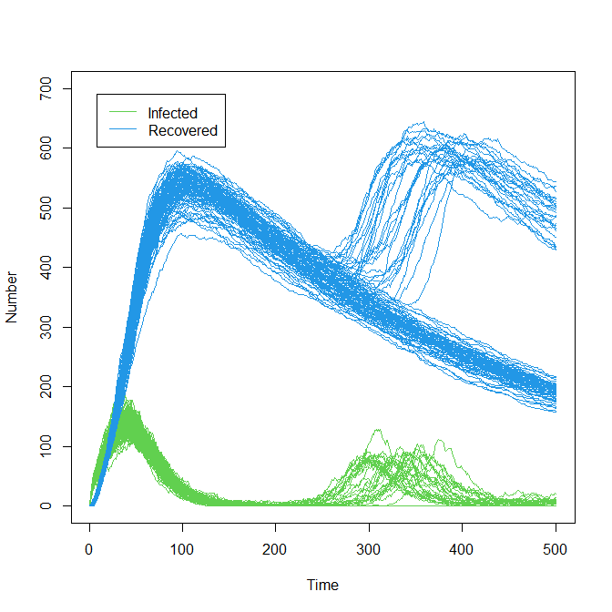
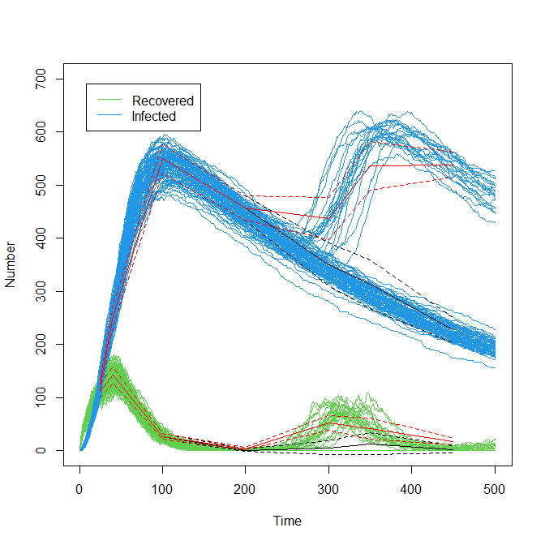
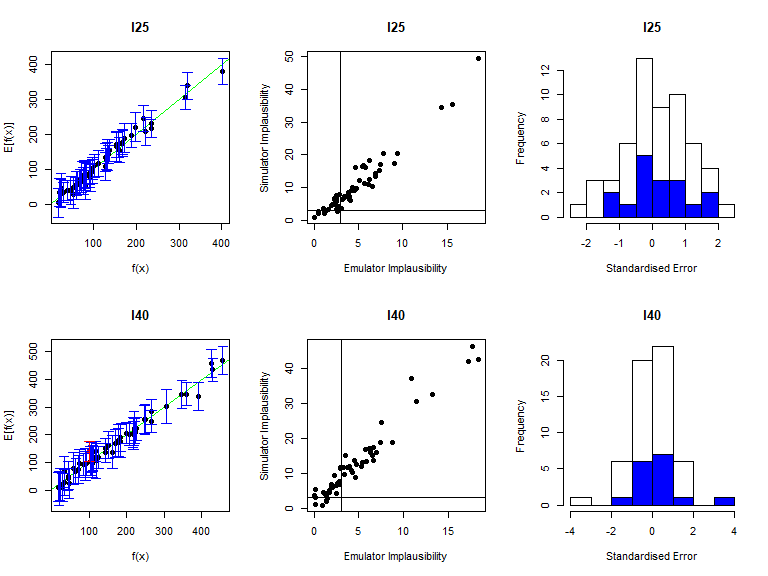
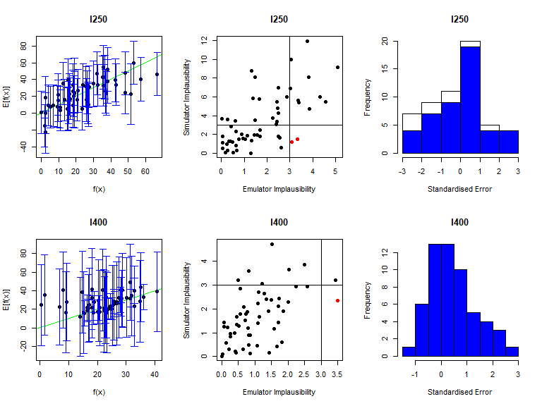
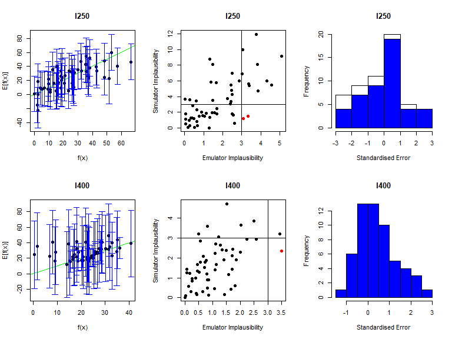

11 Dealing with bimodality
In the previous sections of this workshop we dealt with stochasticity, but not with bimodality, i.e. when one can perform multiple repetitions at a given parameter set and find two distinct classes of behaviour. This is because our SEIRS model did not show any bimodal behaviour in the outputs for the times considered, i.e. for \(t\) up to \(200\). Let us suppose now that we are interested also in later times. Running the model on chosen_params using get_results up to time \(t=500\) and plotting the results for “I” and “R” we obtain:
solution <- get_results(chosen_params, outs = c("I", "R"),
times = c(25, 40, 100, 200, 300, 400, 500), raw = TRUE)
plot(0:500, ylim=c(0,700), ty="n", xlab = "Time", ylab = "Number")
for(j in 3:4) for(i in 1:100) lines(0:500, solution[,j,i], col=(3:4)[j-2], lwd=0.3)
legend('topleft', legend = c('Infected', "Recovered"), lty = 1,
col = c(3,4), inset = c(0.05, 0.05))
The most common example of bimodality, ‘take off vs die out,’ now enters the picture: from time \(t=250\) on, there are a large number of trajectories in green that have zero infected individuals (note the horizontal green line) and a few trajectories where transmission takes off again, producing a second wave of the epidemic (around \(t=300\)).
Investigate how different parameter sets give rise to different levels of bimodality.

In the following subsections we will describe how to deal with bimodality when performing history matching with emulation. Since most parts of the process are very similar to what we have seen already for stochastic models, we will only discuss the areas where the process changes.
11.1 ‘bimodal_wave0’ - design points
While the parameters’ ranges are the same as before, we need to redefine the targets’ list, adding values for times later than \(t=200\):
bimodal_targets <- list(
I25 = list(val = 115.88, sigma = 5.79),
I40 = list(val = 137.84, sigma = 6.89),
I100 = list(val = 26.34, sigma = 1.317),
I200 = list(val = 0.68, sigma = 0.034),
I250 = list(val = 9.67, sigma = 4.76),
I400 = list(val = 15.67, sigma = 5.36),
I500 = list(val = 14.45, sigma = 5.32),
R25 = list(val = 125.12, sigma = 6.26),
R40 = list(val = 256.80, sigma = 12.84),
R100 = list(val = 538.99, sigma = 26.95),
R200 = list(val = 444.23, sigma = 22.21),
R250 = list(val = 361.08, sigma = 25.85),
R400 = list(val = 569.39, sigma = 26.52),
R500 = list(val = 508.64, sigma = 28.34)
)Note that these are the same exact targets chosen for the deterministic workshop, Workshop 1.
Since we are now interested in times after \(t=200\) too, we need to rerun the parameter sets in initial_points, obtaining bimodal_initial_results. We then bind all elements in bimodal_initial_results to obtain a dataframe bimodal_wave0, which we split into a training and a validation set:
bimodal_initial_results <- list()
with_progress({
p <- progressor(nrow(initial_points))
for (i in 1:nrow(initial_points)) {
model_out <- get_results(unlist(initial_points[i,]), nreps = 50, outs = c("I", "R"),
times = c(25, 40, 100, 200, 250, 400, 500))
bimodal_initial_results[[i]] <- model_out
p(message = sprintf("Run %g", i))
}
})
bimodal_wave0 <- data.frame(do.call('rbind', bimodal_initial_results))
bimodal_all_training <- bimodal_wave0[1:5000,]
bimodal_all_valid <- bimodal_wave0[5001:7500,]
bimodal_output_names <- c("I25", "I40", "I100", "I200", "I250", "I400", "I500",
"R25", "R40", "R100", "R200", "R250", "R400", "R500")11.2 Bimodal Emulators
To train bimodal emulators we use the function bimodal_emulator_from_data, which requires the training data, the names of the outputs to emulate, and the ranges of the parameters:
bimodal_emulators <- bimodal_emulator_from_data(bimodal_all_training,
bimodal_output_names, ranges)Behind the scenes, this function does the following:
First it looks at the provided training data and identifies which of the outputs are bimodal (see box below if interested in the method used to identify bimodal outputs).
For the outputs where bimodality is found, the repetitions at each parameter set are clustered into two subsets, based on the mode they belong to.
For outputs without bimodality, stochastic emulators are trained as before. For outputs with bimodality, variance and mean emulators are trained separately for each of the two modes. To access the mean emulators for the first mode, we type
bimodal_emulators$mode1$expectation, and to access the variance emulators for the second mode we typebimodal_emulators$mode2$variance.Finally, an emulator for the proportion of points in each mode is also trained (this is a single emulator, as in the deterministic case). This emulator can be accessed by typing
bimodal_emulators$propand will be referred to as proportion emulator.
Let us now plot the expectation of the mean emulator of \(R400\) for each mode fixing all non-shown parameters to their values in chosen_params:
emulator_plot(bimodal_emulators$mode1$expectation$R400, params = c('alpha', 'epsilon'),
fixed_vals = chosen_params[!names(chosen_params) %in% c('alpha', 'epsilon')])
emulator_plot(bimodal_emulators$mode2$expectation$R400, params = c('alpha', 'epsilon'),
fixed_vals = chosen_params[!names(chosen_params) %in% c('alpha', 'epsilon')])
We immediately notice that there is large difference between the two plots, with mode 2 containing higher values than mode 1. This indicates that mode 1 is the one where the infection dies out.
It is also instructive to plot the expectation of the proportion emulator. We use the argument fixed_vals to set the parameters that are not shown in the plot to be as in chosen_params:
emulator_plot(bimodal_emulators$prop, params = c('alpha', 'epsilon'),
fixed_vals = chosen_params[!names(chosen_params) %in% c('alpha' ,'epsilon')]) +
geom_point(aes(x=1/7, y=1/50), size=3)
The plot only depends on values of \(\epsilon\), indicating that \(\alpha\) is not an active variable for the proportion emulator. When \(\epsilon\) and \(\alpha\) are equal to their values inchosen_params (black dot), we see that the proportion of points in mode 1, where the infection dies out, is around 0.7-0.8. This is in accordance with the plot produced at the beginning of this section, where the infection died out on the majority of trajectories.


11.3 Implausibility
Since we are now in a bimodal setting, we want to regard a point as non-implausible for a given target if it is valid with respect to either mode. This is the default behaviour of the package, when dealing with bimodal emulators.
For a given output and a given point, the implausibility for mode 1 and the implausibility for mode 2 are calculated, and the minimum of them is taken. The maximum (or second-maximum, third-maximum etc) of this collection of minimised implausibilities is then selected, depending on the user choice. For example, to plot the maximum of these minimised implausibilities, we set plot_type to nimp:
emulator_plot(bimodal_emulators, plot_type = 'nimp', targets = bimodal_targets,
params = c('alpha', 'epsilon'))plot_type to imp to produce implausibility plots for each output, for mode 1 and mode 2. Which implausibility plots are the same for each mode, and which are different? Why?

 The implausibility plots are the same between modes for early times (
The implausibility plots are the same between modes for early times (11.4 Emulator diagnostics
As before, the function validation_diagnostics can be used to get three diagnostics for each emulated output. For example, to produce diagnostics for the first four emulators we type:
vd <- validation_diagnostics(bimodal_emulators, bimodal_targets, bimodal_all_valid,
plt=TRUE, row=2) 



As in the deterministic case, one can enlarge the \(\sigma\) values to obtain more conservative emulators, if needed. For example, to double the \(\sigma\) value for the mean emulators for \(I500\) in both modes we would type:
bimodal_emulators$mode1$expectation$I500 <- bimodal_emulators$mode1$expectation$I500$mult_sigma(2)
bimodal_emulators$mode2$expectation$I500 <- bimodal_emulators$mode2$expectation$I500$mult_sigma(2)11.5 Proposing new points
Generating a set of non-implausible points, based on the trained emulators, is done in exactly the same way as it was in Section 8, using the function generate_new_runs. In this case we need to use the function subset_emulators to remove the emulators for the outputs at \(t=450\) (the seventh and fourteenth emulators), for which we did not set targets:
new_points <- generate_new_runs(bimodal_emulators, 150, bimodal_targets, nth=1)Similarly, performing the second wave is done in the same as it was in Section 9, replacing variance_emulator_from_data with bimodal_emulator_from_data.